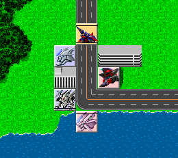

マップウインドウ
戦闘の舞台となるマップを表わしたものです。マップ全体のうち、15×15の範囲が表示されています。
マップウインドウの表示内容について

ユニットの所属する陣営はユニットの色によって示されています。
味方ユニット青色
敵ユニット赤色
中立ユニット黄色
ユニットのいる位置はユニット上に入れられている線で判別できます。
地上・水上線なし
空中下部に線
水中上部に線
地中両側に線
網掛けで表示されているユニットは行動済み、もしくは行動不能のものです。
ユニット用のビットマップが用意されていないユニットは空白のまま表示されます。